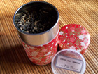

お茶のはじまり

飲茶の起源は定かではありませんが、約5,000年前に中国の農業の神様『神農』がお茶を薬として広めたのが始まりといわれています。
お茶の生産量

参照サイト： Saudade Tea
インフォメーション
- 2017 年1 月10 日
- お茶の常識ページの効果に【フッ素】を追加しました。
- 2016 年12 月25 日
- 当サイトがリニューアルいたしました。今後ともよろしくお願いいたします。
- 2016 年11 月16 日
- お茶カタログに【抹茶】を追加しました。
- 2016 年12 月25 日
- 【日本茶紅茶中国茶】サイトを公開しました。よろしくお願いいたします。
お茶と茶器
日本茶の茶器は、お茶の種類によってそれぞれふさわしい道具があります。
茶筒（ちゃづつ）
お茶は乾燥品なので、湿気は大敵です。お茶には吸水性があるので、保存が悪いと水分の含有量が増え味が落ちます。機密性のある茶筒で保管しましょう。
急須（きゅうす）
どのお茶の急須でも水切れのよいものが基本です。少量でいただくなら小さな急須、たっぷりといただく番茶などには大きめの厚手の陶器が向いています。
世界のお茶全体（紅茶、緑茶、中国茶など含む）の生産量は、2003年は321万トン、2013年は490万トンと10年間で53%伸びています。中でも緑茶生産量の伸び率は高く、2003年は77万トン、2013年は155万トンとなんと101%の伸びを示しています。2021年には、260万トンにまで増加するとみられています。
FAO（国連食糧農業機関）によると、過去10年間の紅茶の年成長率は1.99％、今後はやや鈍化し年成長率は1.87%と予測しています。